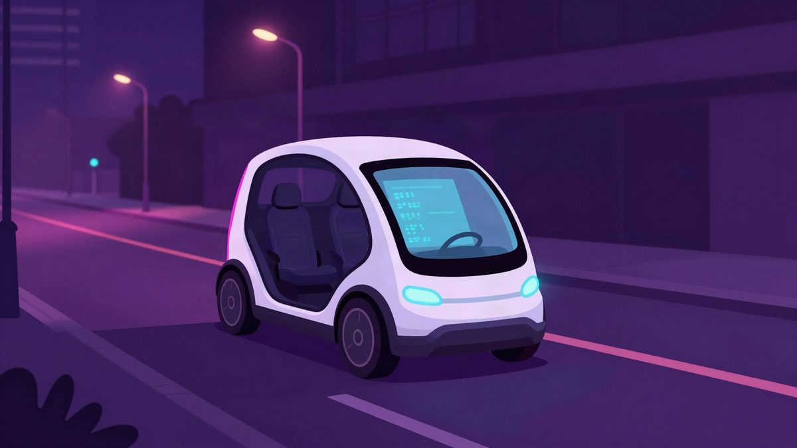
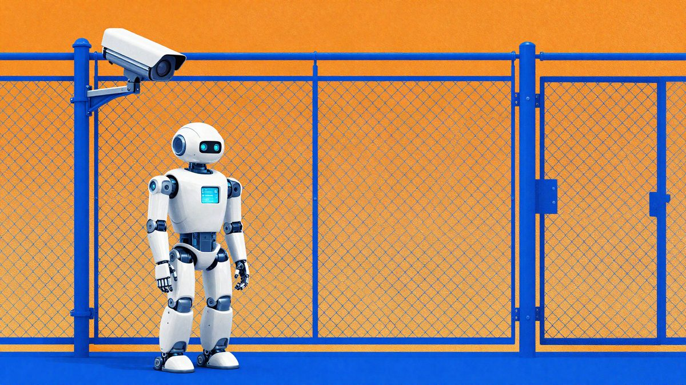

Tesla je NHTSA-i predala odgovor o Cybercabu, ali traži da sve ostane tajno

Tesla je 30. listopada NHTSA-i predala odgovor na posebnu naredbu o usklađenosti Cybercaba sa sigurnosnim standardima i zatražila da cijeli odgovor ostane povjerljiv. U javnom spisu su tri dokumenta, a samo priručnik za hitne službe od 30 stranica ima stvarni sadržaj. NHTSA zasad nije utvrdila da Cybercab krši ijedan standard.
Tesla je 30. listopada, na dan isteka roka, predala američkoj agenciji za sigurnost prometa NHTSA odgovor na posebnu naredbu o usklađenosti Cybercaba sa saveznim sigurnosnim standardima. Istodobno je zatražila da se cijeli odgovor proglasi povjerljivom poslovnom informacijom i da ništa od njega ne bude javno, piše Electrek.
NHTSA je istragu s oznakom AQ26002 otvorila 3. rujna, istoga dana kad je Tesla u Austinu počela naplaćivati vožnje Cybercabom. Istraga obuhvaća oko 1.000 vozila. Tjedan poslije, 10. rujna, glavni pravni savjetnik NHTSA-e potpisao je posebnu naredbu s 21 pitanjem na koja Teslini rukovoditelji moraju odgovoriti pod prisegom. Za nepotpune odgovore prijeti kazna do oko 139 milijuna dolara, a za netočne i kaznena odgovornost.
Što je u javnom spisu
Tesla je 18. rujna tražila produljenje roka za osam tjedana, do 20. studenog, uz obrazloženje da zahtjev zahtijeva pretraživanje evidencija i opsežne narativne odgovore. NHTSA joj je odobrila 30 dana.
U javnom spisu trenutačno su tri dokumenta, a dva su gotovo prazna. Prvi je prateće pismo od jedne stranice, čija je jedina rečenica da je cijeli dokument povjerljiva poslovna informacija. Drugi je rezervirano mjesto za odgovor na pitanje broj 8, u kojem NHTSA traži da Tesla za svaki standard objasni kako je utvrdila usklađenost i je li se oslonila na fizička ispitivanja, simulacije ili inženjersku analizu. Tesla je povjerljivost zatražila za svaki dokument u cjelini.
Treći dokument je jedini sa stvarnim sadržajem: priručnik za hitne službe o Cybercabu na 30 stranica. Tesla ga je, međutim, od srpnja objavila na svojim web stranicama, a namijenjen je policiji i vatrogascima. Electrek to sažima ovako: javnost je dobila priručnik za vuču, a obrazloženje certifikacije ostaje zapečaćeno.
Sporni standardi
Cybercab nema volan, pedale ni retrovizore. Savezni standard zahtijeva da se radna kočnica aktivira papučicom, a NHTSA je ranije javno rekla da vozilo bez papučice kočnice ne može proći certifikaciju prema tom standardu. FMVSS 108 među ostalim traži da se prekidač pokazivača smjera sam vraća u početni položaj pri okretanju volana, a FMVSS 111 traži retrovizore.
Regulator osim toga provjerava je li Tesla certificirala vozilo s privremenim upravljačkim elementima koji bi se prije izlaska na cestu uklonili.
Za usporedbu, Amazonov Zoox također nema volan ni pedale, ali je išao putem zahtjeva za izuzeće prema Part 555. Izuzeće je odobreno u srpnju, uz ograničenje na najviše 2.500 vozila godišnje.
Što slijedi
O zahtjevu za povjerljivost odlučivat će ured glavnog pravnog savjetnika NHTSA-e. Ako ga ocijeni neosnovanim, može od Tesle zatražiti verziju koju je moguće objaviti. NHTSA zasad nije utvrdila da Cybercab krši ijedan standard, a oko 1.000 vozila bez papučice kočnice i dalje vozi putnike po Austinu.
Izvor: MyDrivers (快科技)
Povezani članci

Do četvrtine OpenAI-jeva internog prometa agenata nije bilo pod nadzorom23. listopada 2026. Sudac u SAD-u je odobrio skupnu tužbu protiv Mete zbog praćenja zdravstvenih podataka pacijenata5. studenoga 2026.
Sudac u SAD-u je odobrio skupnu tužbu protiv Mete zbog praćenja zdravstvenih podataka pacijenata5. studenoga 2026.- Google od 2027. traži registraciju svih Android developera, F-Droid upozorava na prijetnju23. listopada 2026.